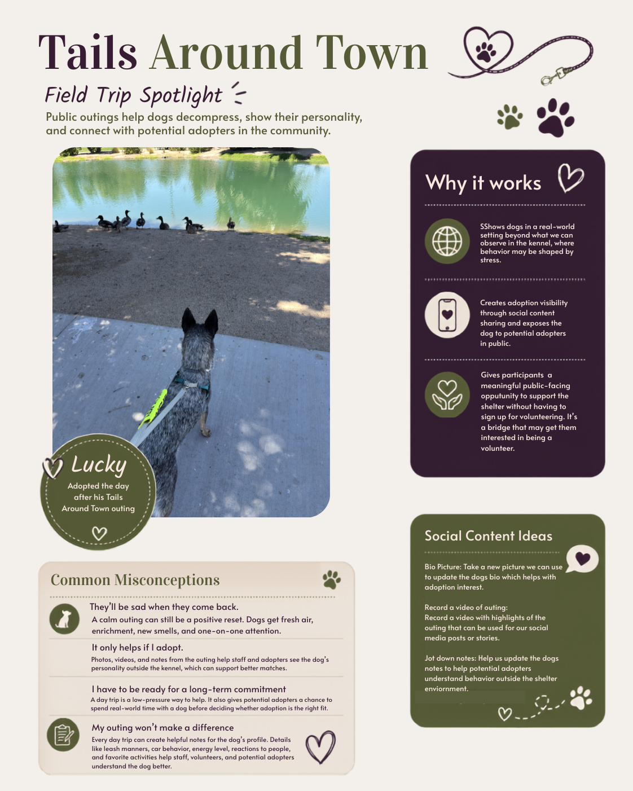

Field trip education and adoption storytelling
Tails Around Town Field Trip Flyer
Purpose: A public-facing flyer designed to explain the value of dog day trips, reduce common concerns, and help interested community members understand how outings support shelter dogs.
Role alignment: Supports public dog field trips, participant education, adoption visibility, community outreach, and recordkeeping through photos, videos, and behavior notes.
What it demonstrates: Translating a shelter program into clear, welcoming public education that encourages participation while setting realistic expectations.